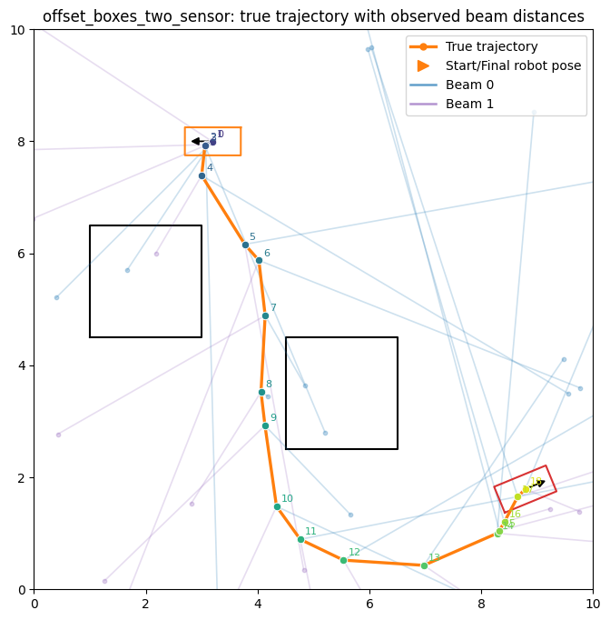
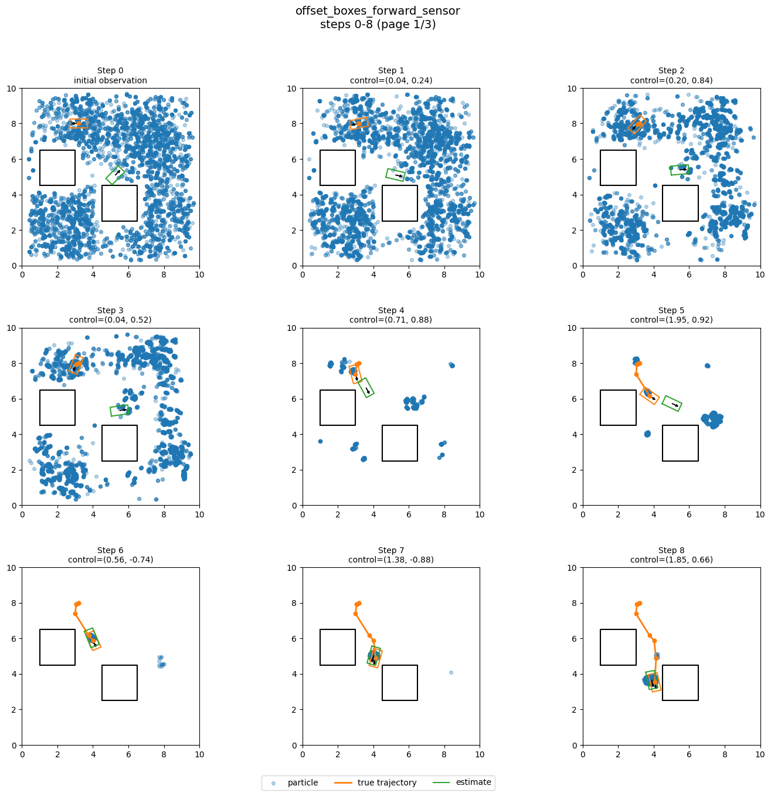
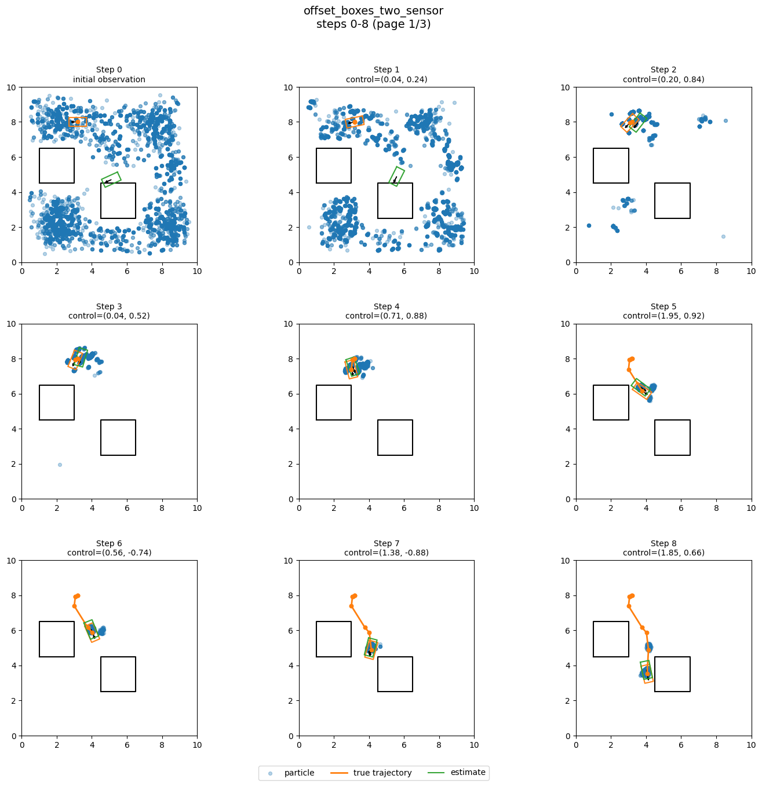

In this MP you will implement:
Look inside the template/ directory for the starter
code. You will find:
Dependencies (no new ones since previous MPs) to be installed:
pip install -r requirements.txtFiles relevant to Part III:
baseline.py - you will edit and submit thisviterbi.py - you will edit and submit this, this is
your main entry point for running part III codeutils.py - helper code for loading and evaluating the
tagging datasetsdata/ - training and development datasets for POS
taggingFiles relevant to Part IV:
particle_filter.py - you will edit and submit this,
this is your main entry point for running part IV codelocalization.py - provided simulator and plotting
helpers for localizationcspace.py, robot.py - provided geometry,
motion, and lidar helpersdata/ - localization scenario JSONsPlease submit:
baseline.pyviterbi.pyparticle_filter.pyIn this part you will implement part-of-speech tagging using a Hidden Markov Model (HMM), and comparing to a baseline. Your code should use the training data to estimate the HMM probabilities it needs, namely the transition and observation models, and then use those probabilities to infer tags for the test sentences.
Run this part with:
python viterbi.py --train data/brown-training.txt --test data/brown-dev.txt --algorithm baseline
python viterbi.py --train data/brown-training.txt --test data/brown-dev.txt --algorithm viterbiThe program reports:
Many words in the corpus have only one possible tag, so overall accuracy is easier to inflate than you might expect and is not necessarily so informative on its own. As you will see, multi-tag accuracy is especially useful for measuring the benefit of context, and unseen-word accuracy helps assess smoothing.
The data consists of sentences from the Brown corpus where each word in the sentence is tagged with a part-of-speech tag. This version uses 16 part-of-speech tags, plus the two boundary tags added by the loader. Do NOT hard-code anything with respect to the start and end tags and just treating them like any other tag - that being said, they can be very helpful for debugging your code!
The provided loader:
START and END tokens to each
sentenceSTART and END when computing
accuracyDo not hardcode:
The autograder will also test your code on hidden corpora whose tagsets differ from Brown.
The baseline tagger you need to implement in baseline.py
ignores context. For each word w, it counts how many times
w appears with each tag in the training set, then during
prediction selects the most frequent tag for that word. For unseen
words, it should predict the most frequent tag overall in the training
set.
A correct baseline should reach roughly 94% overall
accuracy on the development set, but only around 90% on
words with multiple tags and 70% on unseen words.
The Viterbi tagger should implement the standard HMM Viterbi algorithm from lecture for finding the most likely sequence of tags. The model makes two assumptions:
So the model uses:
The provided viterbi(...) function already loops over
the sentence and repeatedly calls stepforward(...). Your
job is to:
train(...)stepforward(...)train(...)It is helpful to think of train(...) in two stages:
count(tag, word)count(prev_tag, next_tag)math.log(p) in all three dictionaries:
init_prob, emit_prob, and
trans_prob (including UNSEEN). Precomputing
these natural logs avoids repeated logarithms in the stepforward
stepFor initial probabilities, use Laplace smoothing:
(count_first(tag) + transition_epsilon) / (len(sentences) + transition_epsilon * K),
where K is the number of distinct training tags. Include
every observed tag, even if it never starts a sentence.
For transitions, use Laplace smoothing with the same
provided transition_epsilon = 1e-5 for every tag pair. Let
\(K\) be the number of distinct tags in
training and outgoing_count(previous) count occurrences of
the previous tag that are followed by another tag in the same sentence.
Then
\[P(\text{current} \mid \text{previous}) = \frac{\text{count}(\text{previous}, \text{current}) + \text{transition\_epsilon}}{\text{outgoing\_count}(\text{previous}) + \text{transition\_epsilon} \cdot K}.\]
Include every pair of observed tags, including pairs never
seen together. For example a tag with no outgoing transitions (like
END) would get a uniform row, with probability \(1/K\) for every next tag. Notice that we
don’t need to worry about “unseen” tags the way we do for words - tags
are our labels and naturally we have to assume our training data covers
the full tag list.
For emissions, smooth each tag separately. If
T is a tag, let:
V_T = number of distinct words seen with tag
Tn_T = total number of training tokens with tag
Talpha_T = smoothing constant for tag T
(see Hapax Smoothing below for computing the per tag
alpha_T)Then for any observed word w with tag T,
the smoothed emission probability is:
\[P(w \mid T) = \frac{\text{count}(T,w) + \alpha_T}{n_T + \alpha_T (V_T + 1)}\]
and for unseen words with tag T, the smoothed emission
probability is:
\[P(\text{UNSEEN} \mid T) = \frac{\alpha_T}{n_T + \alpha_T (V_T + 1)}\]
You should include an explicit UNSEEN emission entry
for every tag.
A hapax word is a word that appears exactly once in the training set. These words are important because they tend to have a tag distribution that is much closer to truly unseen test words than the full vocabulary distribution does. In other words, we can use these hapax words as a proxy for words we haven’t seen.
Let:
hapax(T) = number of hapax words whose tag is
TH = total number of hapax words across all tagsalpha = the provided base smoothing constant,
1e-5Use the following rule with the provided
emit_epsilon = 1e-5 as \(\alpha\):
\[\alpha_T = \alpha \cdot \frac{\max(1, \text{hapax}(T))}{\max(1, H)}.\]
The max terms ensure that every tag’s unseen probability
is positive even if a tag has no hapax words.
The result of this redistribution of smoothing is that tags with more
hapax words get a larger UNSEEN probability mass. It looks
like a tiny modification, but it has a large effect because unseen-word
decisions are exactly where the HMM is weakest. Even though the numeric
change in alpha_T is small, it can change the
relative ranking of tags for unseen words and therefore
the predicted tag sequence.
Singleton words act as a proxy for unseen words:
stepforward(...)The provided code initializes the first column of the trellis using
the initial log tag probabilities and then iteratively calls your
stepforward(...) method.
Let \(b_i(t)\) be the score of the best partial tag sequence ending in tag \(t\) after processing word \(i\). Notice we use the word “score” because these are not real probabilities (we are not doing normalization). Moreover we will use sums of log probabilities rather than products of probabilities to avoid numerical underflow. Compute these scores as follows:
\[b_i(t') = \log P(w_i \mid t') + \max_{t} \left[b_{i-1}(t) + \log P(t' \mid t)\right]\]
Note:
i = 0 do not apply a transition, just add the
emission log probability to prev_probUNSEEN entry[tag]. At later columns, extend
the best predecessor path with the current tag|

Visible two-beam replay scenario. The orange curve is the
prerecorded true trajectory, and the short colored segments show the
stored beam observations along that path. Notice that the observations
are noisy!
|

Visible 1: one forward beam. Notice the filter is estimating the
current state at each step; it is not estimating an entire trajectory
the way we did in Viterbi.
|

Visible 2: two diagonal beams. Notice how we localize faster
when we have two observations!
|
In this part you will localize a rectangular Unicycle robot in a continuous 3D configuration space, \(x_t = (p_x, p_y, \theta)\), using a particle filter. The robot has a known geometry and executes known controls, but both the controls and the sensor observations are noisy. The robot is equipped with one or two forward-facing range sensors (lidar beams) that return the distance to the nearest obstacle in their direction. The provided scenarios are generated by replaying a prerecorded true trajectory of the robot through an environment with polygonal obstacles, and recording noisy controls and noisy beam observations along that trajectory.
Each localization scenario
(data/localization_visible_[1-4].json) contains:
Your job is to complete the particle filter based localization code
by filling in the missing functions in particle_filter.py -
update_belief, resample, and
act.
Run this part with:
python particle_filter.py --env data/localization_visible_1.jsonReplace localization_visible_1.json with any of the
other available scenarios to experiment. You can also pass in
--num_particles to change the number of particles,
--seed to set the random seed, and --show to
visualize the results or --save to save the visualization.
If a run produces multiple figure pages, they will be saved as
..._1.png, ..._2.png, and so on.
The provided four files form two environment pairs:
visible_1 and visible_2 share the same
environment and replayed true trajectory, but visible_1 has
one beam and visible_2 has two beamsvisible_3 and visible_4 are a second
environment pair with the same one-beam / two-beam structureThe gradescope tests use unseen scenarios but follow the same general format.
For each hidden localization scenario, the autograder scores according to the final fraction of particle weight within some distance of the true \((p_x, p_y)\) position.
The localization code is organized around two provided abstractions
in localization.py:
LocalizationProblem
This stores the scenario definition loaded from a JSON file,
including the robot, the start state, the controls, the beam directions,
the noise parameters that were used to generate the replay data, and
optionally prerecorded true_states and
observations.
LocalizationSimulator
This is the simulator that provides the online interface used by your filter. It provides the following operations:
observe() - returns the current observation from the
replayed scenarioobserve_config(config, noisy=False) - returns the
expected beam distances for any candidate particle configurationpropagate_config(config, control, control_noise=None) -
propagates a particle through the noisy motion modelstep(control) - advances the replayed true state by one
time stepFor the provided scenarios, the simulator replays stored
true_states and observations if they are
present in the JSON file. If you create your own custom scenario file
without replayed data, the same simulator can still generate motion and
observations online from the model.
The particle filter code is organized around the
run_particle_filter(...) function in
particle_filter.py, which runs the overall particle filter
loop. The helper functions initialize_valid_particles(...),
estimate_state(...), and
run_particle_filter(...) are already provided, your job is
to fill in the missing pieces of that loop by implementing only the
three missing functions:
update_belief(...)resample(...)act(...)Particles, weights, and beam observations are real numeric NumPy
arrays with shapes (N, 3), (N,), and
(B,), respectively. Return particle and weight arrays in
this same representation. The grader calls the three required functions
directly, using their default noise values for localization.
update_belief(...)This function returns nonnegative posterior weights summing to one.
Suppose the current particle set is \(\left\{x_t^{(1)}, x_t^{(2)}, \ldots, x_t^{(N)}\right\}\) with prior weights \(\left\{w_t^{(1)}, w_t^{(2)}, \ldots, w_t^{(N)}\right\}\). Let the sensor observation at this time step be the beam-distance vector \(z_t = (z_{t,1}, z_{t,2}, \ldots, z_{t,B})\).
For each particle, use the simulator to compute the expected measurement \(h\!\left(x_t^{(i)}\right)\).
The provided observation model assumes independent Gaussian noise on each beam, \(\mathcal{N}(z; \mu, \sigma^2) = \frac{1}{\sqrt{2\pi}\sigma}\exp\left(-\frac{(z-\mu)^2}{2\sigma^2}\right)\), and therefore, for beam \(b\),
\[ p(z_{t,b} \mid x_t^{(i)}) = \frac{1}{\sqrt{2\pi}\sigma} \exp\left( -\frac{\left(z_{t,b} - h_b\!\left(x_t^{(i)}\right)\right)^2}{2\sigma^2} \right)\]
and assuming the beam noises are independent, the full observation
likelihood is the product across beams, \(p(z_t \mid x_t^{(i)}) = \prod_{b=1}^{B} p(z_{t,b}
\mid x_t^{(i)})\). Note that \(\sigma\) is the particle
observation-noise standard deviation that you choose for your
filter which can be different than the noise used to generate
the true data. To reiterate, the scenarios are generated using one
sensor noise, but your particle filter is expected to use a
tuned particle observation noise that works well for
filtering. In other words, you should experiment on the visible
scenarios, choose a good value, and then set the default value
in the function signature to your tuned value so that your full
run_particle_filter(...) uses it.
Given the above observation model the standard Bayes-filter update is:
\[\tilde{w}_t^{(i)} = w_t^{(i)} \, p(z_t \mid x_t^{(i)})\]
and then normalize the weights:
\[w_t^{(i)} = \frac{\tilde{w}_t^{(i)}}{\sum_j \tilde{w}_t^{(j)}}.\]
The equations above, while correct, will lead to numerical underflow/overflow. To avoid this, one approach is to compute the sum of logs (to avoid underflow from the product) and then exponentiate after subtracting the maximum value (this avoids overflow of exponentiating a large value while not affecting post normalization values) before normalizing:
\[\ell_i = \log w_t^{(i)} + \sum_{b=1}^{B}\left[-\log(\sqrt{2\pi}\sigma) - \frac{\left(z_{t,b} - h_b\!\left(x_t^{(i)}\right)\right)^2}{2\sigma^2}\right].\]
For zero prior weights, set \(\ell_i = -\infty\) so their posterior weights remain zero.
\[m = \max_i \ell_i, \qquad u_i = \exp(\ell_i - m).\]
\[w_t^{(i)} = \frac{u_i}{\sum_j u_j}.\]
resample(...)Given particles \(\left\{x^{(1)}, \ldots, x^{(N)}\right\}\) with normalized weights \(\left\{w^{(1)}, \ldots, w^{(N)}\right\}\), resampling draws new ancestor indices
\[a_j \sim \text{Categorical}\!\left(w^{(1)}, \ldots, w^{(N)}\right)\]
and thus creates the new particle set \(x_{\text{new}}^{(j)} = x^{(a_j)}\). In
other words we draw N times with replacement from our
particle set according to the weights. After resampling, all particles
should receive uniform weights:
\[w_{\text{new}}^{(j)} = \frac{1}{N}.\]
The point of resampling is to focus the particle set on the high-probability regions of the state space by replicating particles with high weights and eliminating particles with low weights. We do this to address weight degeneracy (where over time our weight distribution becomes very skewed), but repeated resampling can reduce particle diversity (sample impoverishment). Motion noise (next section) will help us maintain diversity…
act(...)Let the control at the current step be \(u_t\). For each particle \(x_t^{(i)}\), your motion update samples one
noisy successor \(x_{t+1} \sim p(x_{t+1} \mid
x_t^{(i)}, u_t)\) by querying the simulator’s
propagate_config(...) function. If the simulator returns
None for a particle, that means the particle’s motion would
have resulted in a collision, so you should keep the old particle
instead of propagating it (let resampling remove this particle in a
future iteration if relevant).
The data was generated with a specific noisy motion model, i.e.,
using simulator.problem.control_noise. Like with
observation noise, it is tempting to directly use this noise when
propagating particles forward, but in practice particle filters often
work better with a relatively diffuse particle action model to avoid
collapse. Therefore, similar to the observation noise, you should
experiment with a tuned particle action noise that
works well for filtering. In other words, you should not necessarily use
the same noise that was used to generate the data, but rather choose a
noise level that works well across the visible scenarios.
Submit baseline.py, viterbi.py, and
particle_filter.py to Gradescope. Do not forget to access
Gradescope from the Launch App button in Coursera and to comment out
print statements to avoid timeouts.
You are expected to be familiar with the general course policies, including academic integrity. This is an individual assignment and the code you submit must be your own work.